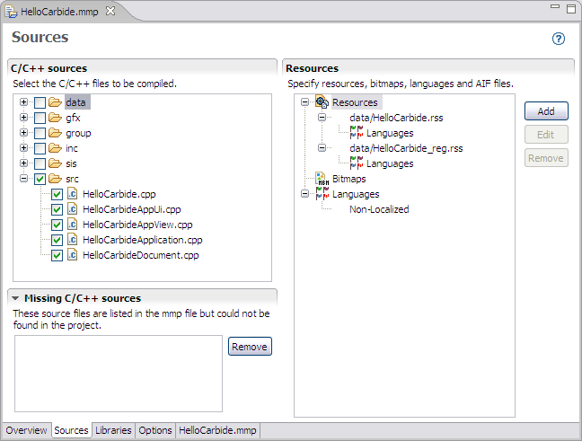

The MMP editor sources window lists the C++ and resource files that you can select to be compiled. The MMP editor sources window is shown in Figure 1.

Figure 1 - MMP Editor Sources window
| Name | Function |
|---|---|
|
C/C++ sources |
Select the C/C++ files to be compiled with your project. |
|
Resources |
Add, remove, or edit resources, bitmaps, languages, and AIF files to be compiled with your project. |
| Missing C/C++ sources | Shows a list of missing source files referenced by project MMP files. |